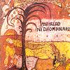

Celtic Lyrics Corner > Artists & Groups > Domhnaill Family > Mairéad Ní Dhomhnaill > Lately Last Night
|  | Lately Last Night |
| Credits : | n/a |
| Appears On : | Mairéad Ní Dhomhnaill |
| Language : | English |
| Other Versions : | " A Nobleman's Wedding " on Altan's album Harvest Storm |
Lyrics :
Lately last night I was asked to a wedding
A wedding of a fair maid that proved to be unkind
When first she thought on her new intended lover
The thoughts of her old love still ran through her mind
Supper was over and everything ended
And every young man was to sing a fine song
'Til it came to the turn of her new intended lover
The thoughts of her old love still ran through her mind
Oh many's the one has been seven years parted
Seven years away, love, that proved to be unkind
But I have only been two years away, love
Two years away, love, that proved to be unkind
Oh how can you sit at another man's table?
Or how can you drink of another man's wine?
Or how can you lie in the arms of another
When it's many the night you have laid in mine?
The bride, she was seated at the head of the table
She knew very well to whom those words belonged
Her heart, it grew faint, she could stand it no longer
It was down at the feet of the bridegroom she fell
Oh grant me one favor, one favor I ask you
Oh grant me one favor, one favor of mine
One night for to lie in the arms of another
And the rest of my life for to lie in thine
You ask for a favor that cannot be granted
For you __ this, my lassie, in time
For I can see quite clearly your poor heart is breaking
And all for the sake of this foreign young man
So sighing and sobbing she went from the table
And sighing and sobbing she went to her bed
But early next morn when the bridegroom awakened
He turned to his true love found that she was dead
Oh Annie, lovely Annie, I knew you never loved me
For my love and your love could never agree
My own, I have taken you from one you loved better
My own, I have taken you, the bark from the tree
So it's now I'll put on my suits of deep mourning
Suits of deep mourning, I'll wear two and three
And it's then I'll put on my own wedding garment
And I'll try not to go between the bark and the tree